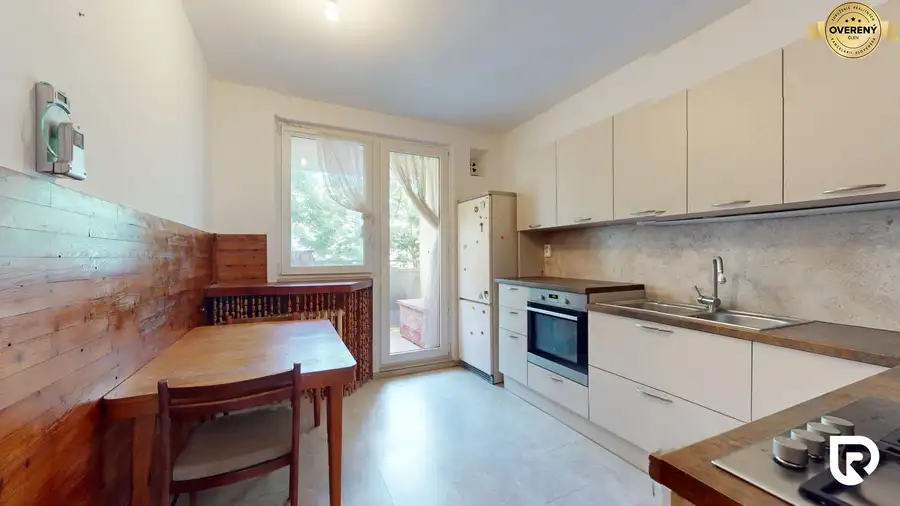
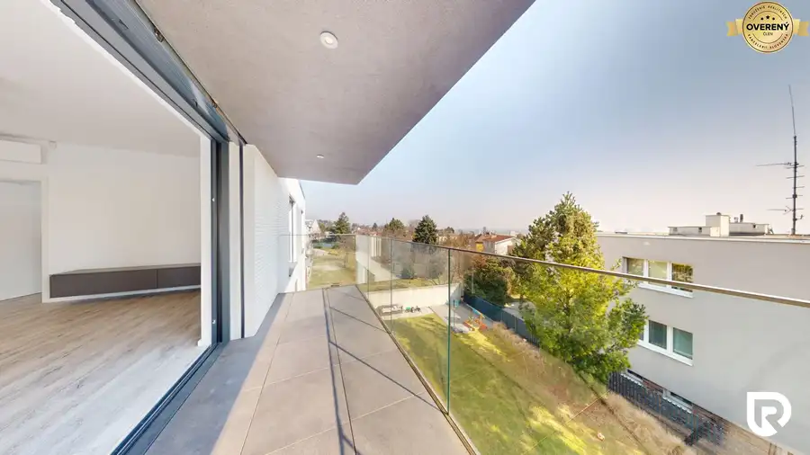
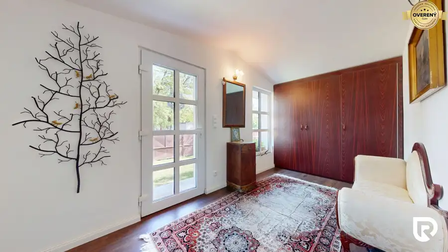

90 m² byt so staromestskou atmosférou a vysokými st
Ružinov, Bratislava
- Dispozícia3-izbový
- Plocha90.5 m²
- Poschodie5. z 5
- Stavpôvodný
O nehnuteľnosti
Nie každý pôvodný stav je nevýhoda. Najmä ak máte k dispozícii
90 m², vysoké stropy, pôvodné drevené podlahy a veľmi dobrú dispozíciu
, s ktorou sa dá ďalej pracovať.
Na predaj ponúkame nadštandardne veľký 3-izbový byt s výmerou 90 m² v tehlovom bytovom dome zo 60. rokov.
Byt je v pôvodnom stave a čaká na kompletnú rekonštrukciu. Práve vďaka tomu si ho nový majiteľ môže vytvoriť od začiatku podľa vlastných predstáv a využiť potenciál, ktorý táto výmera ponúka.
Dispozícia, ktorá dáva zmysel
Jednou z najväčších výhod bytu je jeho dispozícia. Všetky izby aj kuchyňa sú samostatné a nepriechodné a byt je orientovaný na dve svetové strany.
Už existujúce rozloženie zároveň umožňuje
vytvorenie 4-izbového bytu bez zásadných dispozičných zásahov
.
Pri rekonštrukcii sa ponúka viacero možností – vytvorenie spálne so šatníkom orientovanej do pokojného vnútrobloku, zväčšenie kúpeľne o časť chodby alebo využitie veľkorysej vstupnej chodby na množstvo úložného priestoru.
Aj po týchto úpravách zostáva byt vzdušný a jednotlivé miestnosti majú veľmi príjemné rozmery.
A potom sú tu detaily, ktoré sa dnes už vytvárajú ťažko –
vysoké stropy, pôvodné drevené podlahy a atmosféra staršieho tehlového bytu.
Dom, ktorý dostáva druhý život
Byt sa nachádza na
5. z 5. poschodí
a v dome je nový výťah. Strecha bola približne pred piatimi rokmi kompletne zrekonštruovaná.
Samotný bytový dom aktuálne prechádza rozsiahlou obnovou. Vymenené boli vertikálne a horizontálne rozvody aj elektroinštalácia v spoločných priestoroch, realizuje sa nová fasáda so zateplením a nové pivničné kobky. Nasledovať bude rekonštrukcia spoločných chodieb.
Aktuálne mesačné náklady preto zahŕňajú aj vyšší príspevok do fondu opráv súvisiaci s rekonštrukciou domu.
Pri tomto byte mám navyše jednu výhodu aj ja-
som zástupkyňou vlastníkov v bytovom dome
, takže jeho stav a celú rekonštrukciu poznám veľmi dobre. Na obhliadke vám viem presne povedať, čo sa v dome urobilo, čo sa ešte plánuje a aké investície dom čakajú. Bez dohadov a všeobecných informácií.
Lokalita, kde máte všetko poruke
Jednou z najväčších výhod tejto adresy je, že
auto môžete pokojne nechať doma
.
Autobus, trolejbus aj električka sú v pešej dostupnosti. Rovnako parky, detské ihriská, obchody, služby či reštaurácie.
V sobotu môžete skočiť na nákup na ikonické
Trhovisko Miletičova
, ísť si zabehať k Štrkoveckému jazeru alebo sa vybrať pešo smerom do Starého Mesta.
Bonusom je vnútroblok s možnosťou bezplatného parkovania. V okolí je zároveň dostupné parkovanie v rámci systému PAAS.
Je to jednoducho
mestské bývanie v lokalite, ktorá funguje
- a zároveň v časti Bratislavy, ktorá sa ďalej rozvíja a dlhodobo si drží svoju hodnotu.
Pre koho je tento byt?
Pre niekoho, kto nehľadá hotovú rekonštrukciu podľa vkusu niekoho iného.
Ale hľadá
priestor
.
90 m², ktoré si môže navrhnúť podľa seba. Možnosť 4 izieb. Vysoké stropy. Pôvodné drevené podlahy. Tehlový dom. Dve svetové strany. A lokalitu, z ktorej nemusí každý deň sadať do auta.
Je to byt, ktorý dnes potrebuje rekonštrukciu, ale má veľmi dobrý základ na to, aby z neho vzniklo naozaj výnimočné mestské bývanie
.
V prípade záujmu o detailnejšie informácie alebo obhliadku nehnuteľnosti ma neváhaj kontaktovať:
Ing. Kristína Dičér
RADO Reality Group
Tel.:
E-mail:
Uvedená cena je konečná, pokiaľ sa zmluvné strany nedohodnú inak, a nenavyšuje sa o odmenu sprostredkovateľa.
V cene je zahrnuté právne poradenstvo, vyhotovenie kúpnych zmlúv, hypotekárne poradenstvo a poplatok za návrh na vklad do katastra.
RADO Reality Group je ocenená Realitnou úniou ako najlepšia realitná kancelária na Slovensku za rok 2022 a 2023. Okrem toho sme držiteľmi ďalších 6 prestížnych ocenení.
Parametre
| Celková rozloha | 90.5 m² |
|---|---|
| Úžitková plocha | 90.5 m² |
| Poschodie | 5/posledné poschodie |
| Počet poschodí | 5 |
| Počet izieb | 3 |
| Stav | pôvodný |
| Odvoz odpadu | áno |
| Plyn | áno |
| Internet | lokálny poskytovateľ |
| Kúpeľňa | vaňa |
| Vykurovanie | spoločné |
| Balkón | nie |
| Lódžia | nie |
| Terasa | nie |
| Pivnica | áno |
| Garáž | nie |
| Výťah | áno |
| Parkovanie | verejné |
| Postavené z | tehla |
| Zariadenie | zariadený |
| Zateplený objekt | áno |
| Krb | nie |
| Klimatizácia | nie |
| Káblová televízia | áno |
| Energetický certifikát | nie |
| Predzáhradka | nie |
| Bezbariérový prístup | nie |
| Okná | plastové |
| Orientácia | sever/juh |
| Dátum zverejnenia | 18. 8. 2026 |
Kde to je
Mohlo by Vás zaujímať

Byt10 219 800 €3i byt s veľkou výmerou v Pezinku v pôvodnom stave Pezinok 3-izbový79.21 m²3. podlažie Hľadáte priestranný byt pre rodinu vo vyhľadávanej časti Pezinka, ktorý si môžete prerobiť presne podľa vlastných predstáv? Byt s veľkorysou výmerou,…
Byt10 2 300 €Luxusny 4-izbový byt s panoramatickým výhľadom- Staré Mesto Staré Mesto, Bratislava 4-izbový104 m²2. podlažie Ponúkame na prenájom veľkorysý a svetlý 4-izbový byt nachádzajúci sa v prestížnej lokalite Bratislava – Staré Mesto, Javorinská ulica. Byt poskytuje…
Rodinné domy10 575 000 €NOVÁ CENA- 5 izbový rodinný dom v Malinove | 751 m² pozemok Malinovo 5-izbový338 m² Hľadáte pokojné rodinné bývanie v zastavanej časti Malinova s dostatkom priestoru, súkromia a potenciálu? Dom obklopený záhradou plnou ovocných…